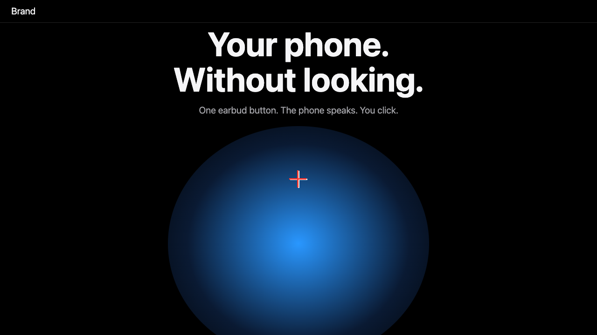
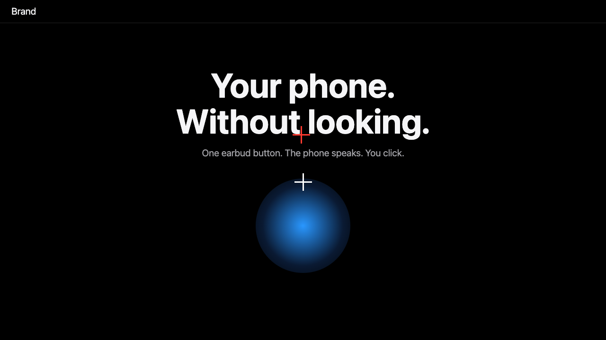

Fail the build when a page looks off.
Measures the visual balance of any web page or Android screen. Numbers, not opinions. No AI.
See what it sees.
White cross: the middle of the screen. Red cross: the centre of visual weight. The tool checks that they are close.


One command.
Needs Node 20 and Chrome. Exit code 1 when any screen fails, so CI stops.
npx github:IFAKA/layout-balance http://localhost:3000 FAIL 1280x720 page - dominance: one picture takes 75% of the screen (limit 0.45) - top-clearance: content starts 2px under the top bar
What it checks.
Weight centre
Is the visual weight too far left, right, high or low? centre-x centre-y
Whitespace
Is the empty space above and below very uneven? whitespace-tilt
Dominance
Is one picture taller than 45% of the screen? dominance
Cut off
Is text cut by the fold or the side edge? fold-cut edge-cut
Spacing
Are two blocks closer than 8 px? min-gap edge-touch
Overflow
Does the page scroll sideways? overflow-x
Any screen with a tree.
The web uses Playwright. Android uses adb and uiautomator. The same rules run on both.
npx github:IFAKA/layout-balance android screens.json --out report
Same page, same result.
It is arithmetic on box positions and one screenshot. It runs once and exits. It never changes your page. Open source, MIT.
layout-balance · MIT · a deterministic layout linter for Playwright and Android